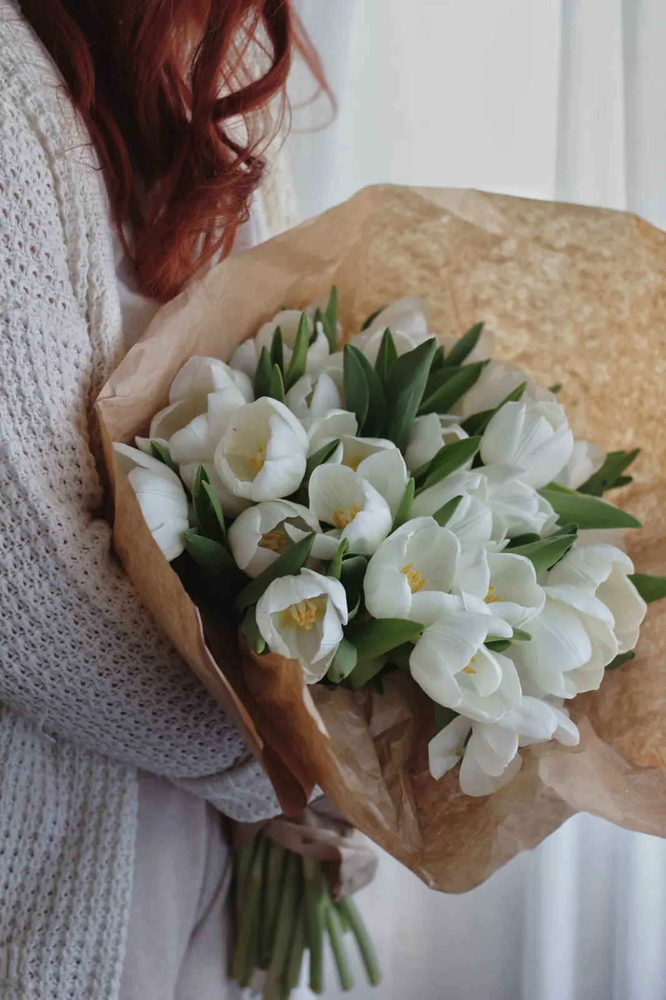
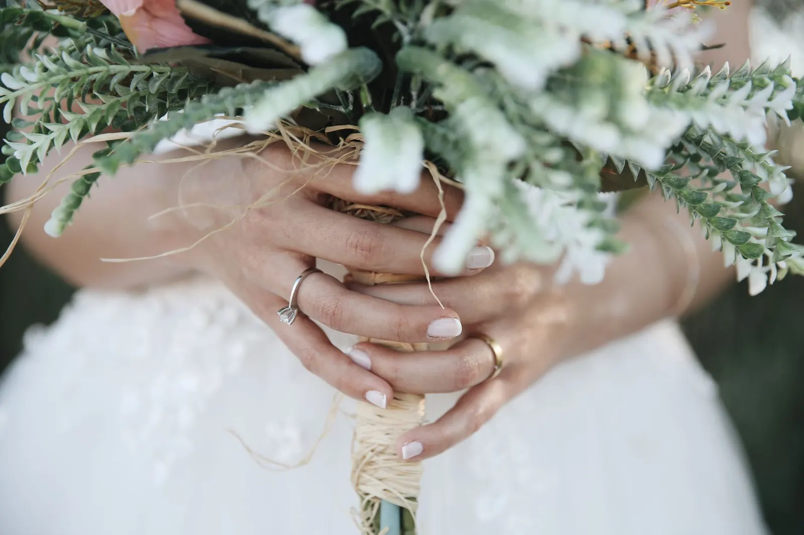
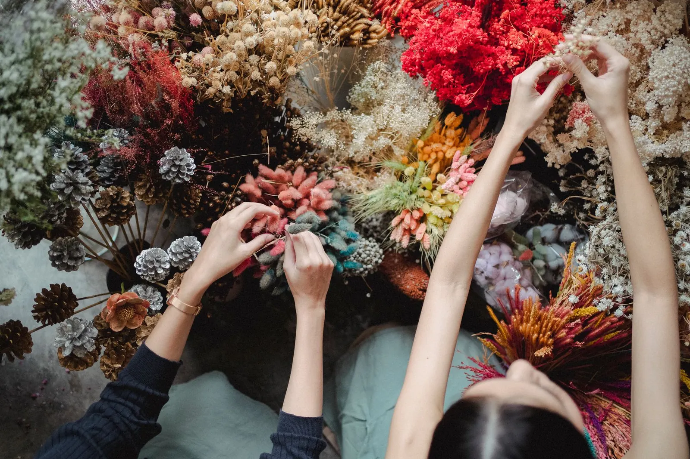
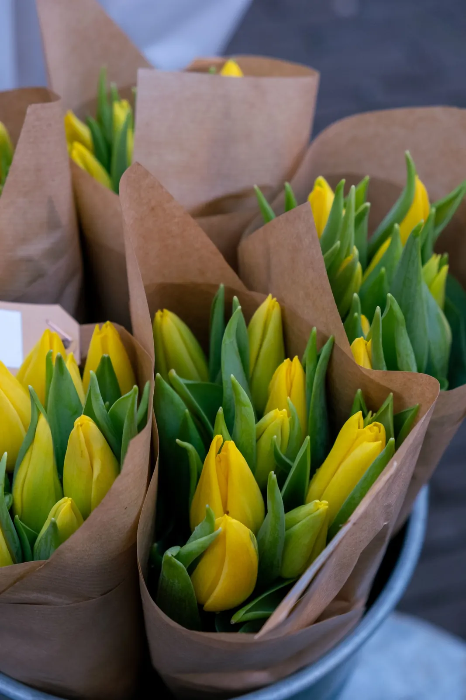

Kytice
K narozeninám, na rande nebo jen tak. Řekněte, pro koho je, a my vybereme, co ten den kvete nejhezčeji.
Květinářství v Liberci
Kytice vážeme z poupat. Rozvinou se až doma, ve Vaší váze.
Posuňte stránku a poupě se rozvine
Rozkvetlá kytice je nejkrásnější první den. Ta naše jím teprve začíná, protože nejhezčí chvíli prožije u Vás doma, ne ve výloze.

K narozeninám, na rande nebo jen tak. Řekněte, pro koho je, a my vybereme, co ten den kvete nejhezčeji.

Kytice pro nevěstu, korsáže, výzdoba stolů. Na schůzce projdeme barvy i místo a ukážeme Vám květiny naživo.

Věnce a kytice na rozloučenou. Zavolejte, domluvíme vše po telefonu a květiny dovezeme, kam potřebujete.

Do bytu i do kanceláře. Poradíme, co vydrží na severním okně a co snese, když na zalévání zapomenete.

Pro koho kytice je, kdy ji chcete a jaké barvy má ten člověk rád.
Z poupat, aby se rozvinula až u Vás. Fotku Vám pošleme, než vyjde ze dveří.
Po Liberci ji dovezeme až ke dveřím. Ke kytici přidáme kartičku s Vaším vzkazem.

Objednávky a dotazy
+420 123 456 789
Květinářství Poupě
Květná 9, Liberec
naproti zastávce tramvaje
kytice@poupe.example
Svatby domlouváme alespoň měsíc předem.